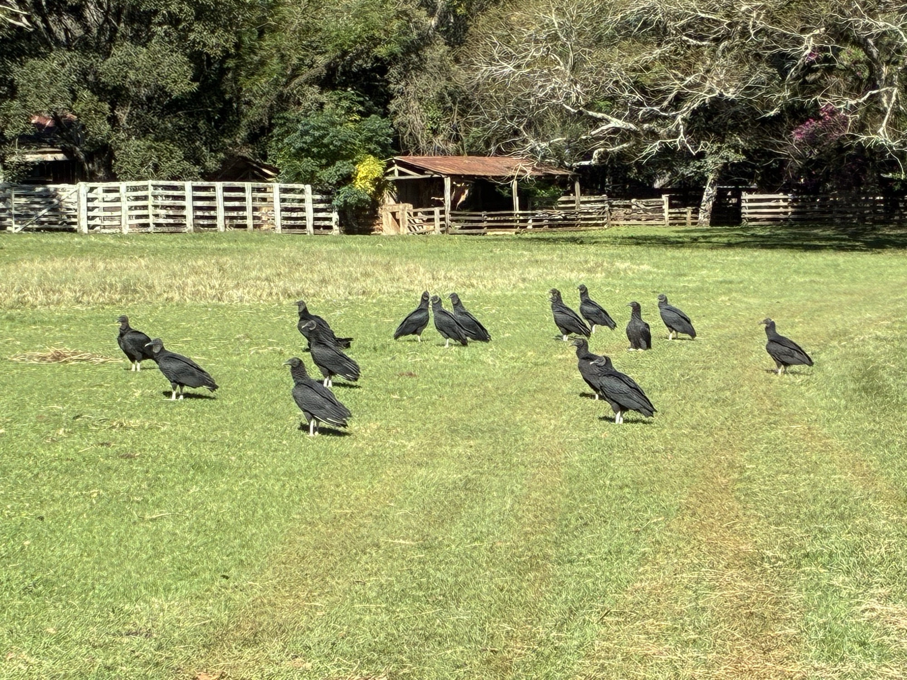

Museu da Cascata
A memória da vida rural reunida e preservada desde 2010.
Um acervo que conta o campo
O Museu da Cascata foi fundado em 2010 e nasceu da vontade de preservar a memória da vida rural. Tudo começou com o proprietário guardando peças e ferramentas antigas. Com o tempo, a vizinhança passou a doar outros objetos ligados às atividades do campo, e o acervo cresceu.
Entre as peças estão arados de madeira, baús do século XIX, ferramentas de trabalho de outros tempos e equipamentos fotográficos antigos. Cada objeto ajuda a contar como a vida e o trabalho mudaram no pampa ao longo das gerações.
Visitantes de todo lugar
Desde a sua fundação, o museu já recebeu mais de mil visitantes. Entre eles, estudiosos de fora do país, como professores alemães e americanos, atraídos pela oportunidade de conhecer de perto a história rural da fronteira gaúcha.
Da sesmaria aos dias de hoje
O museu é a extensão natural de uma propriedade que atravessa mais de um século de história. Visitá-lo é percorrer o caminho da Sesmaria do Parové até a fazenda viva que existe hoje.
Leia a história